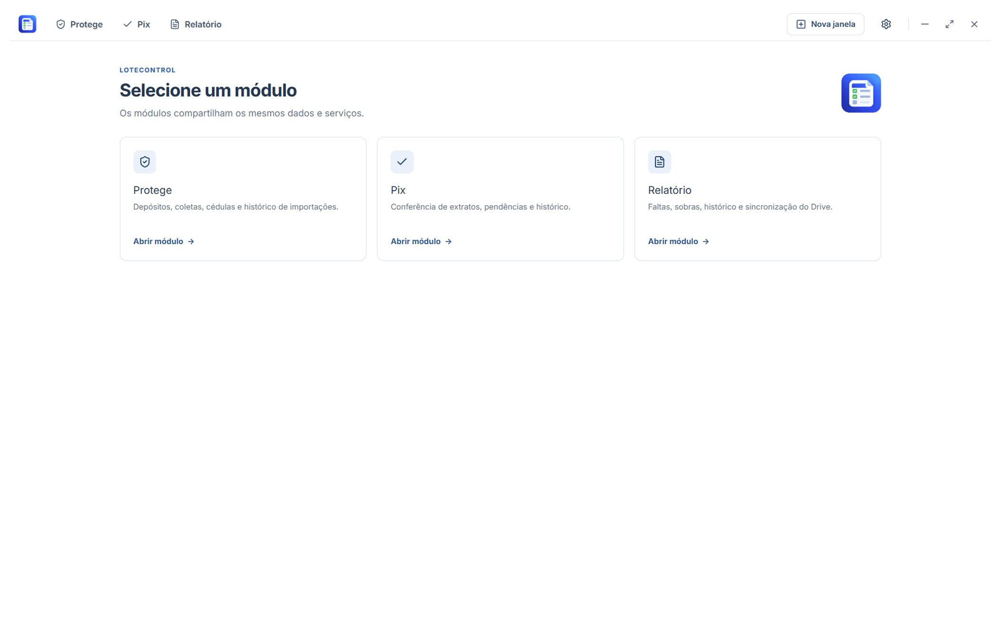

Conciliação financeira e fechamento de caixa para casas lotéricas
Reúna o controle do Pix, da Protege e o relatório diário em um só aplicativo, com sincronização pelo Google Drive.

Baixar LoteControl
Disponível para Windows 10 e Windows 11 (64-bit).
Baixar para Windows